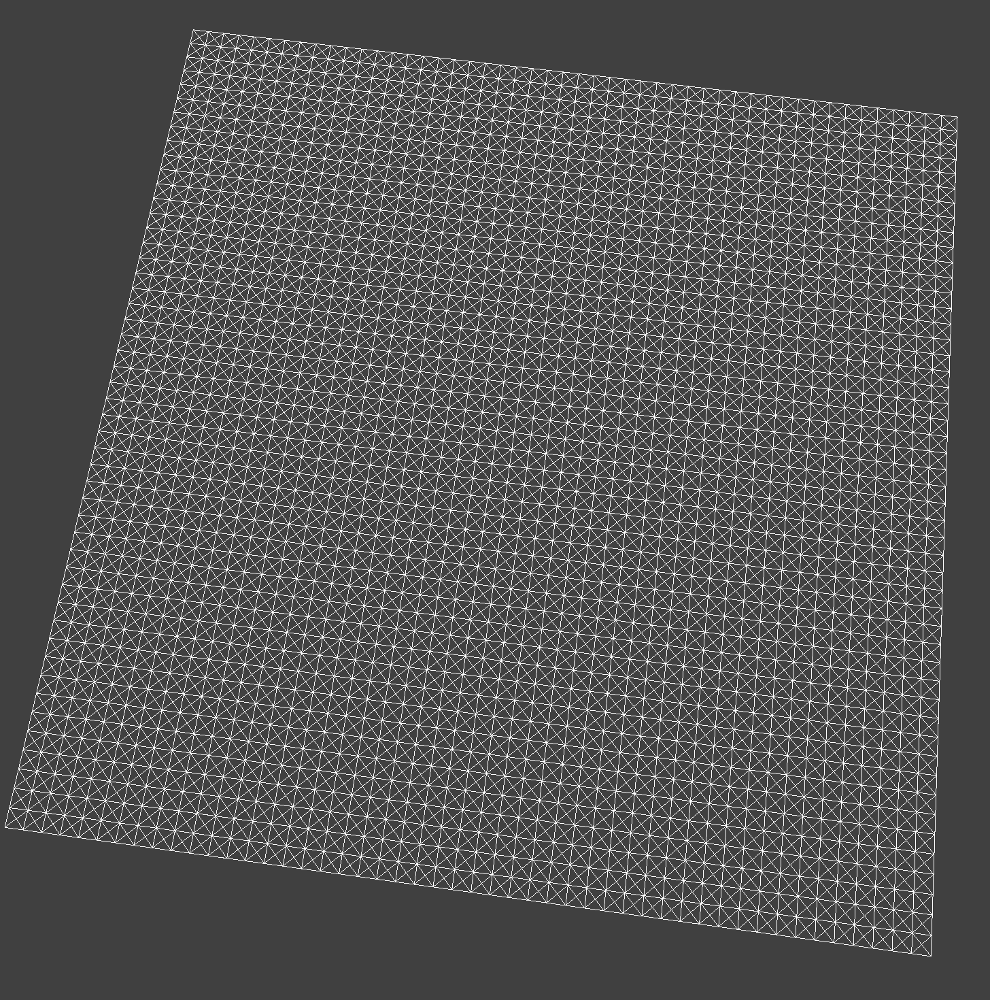
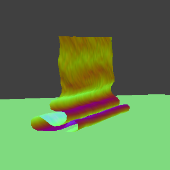
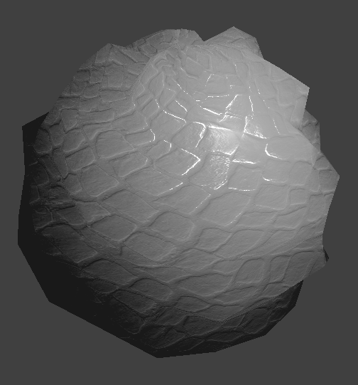
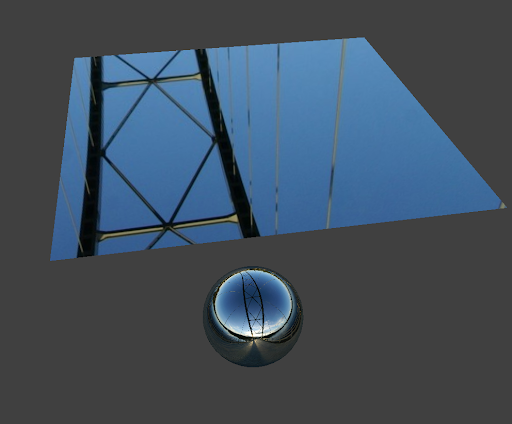

Overview
Give a high-level overview of what you implemented in this project. Think about what you've built as a whole. Share your thoughts on what interesting things you've learned from completing the project.
In this project we built a method for simulating forward kinematics physics models on finite element meshes. We created these meshes with a grid of masses and springs, taking liberties to sometimes create a realistic-looking simulation rather than what might be the most accurate by approximating everything with springs hard-coding constraints for distances between springs and points. We parameterized our forward kinematics so we could freely adjust different material properties such as spring force (ks), damping, density, and size of mesh. We made sure our meshes could collide with other objects, other meshes, and even itself. Finally, we created different shaders for the visuals of the simulation using shaders, implementing blinn-phong shading as well as some bump/displacement mapping. Bump mapping is quite intriguing as it provides the illusion of shape while not actually requiring a change in our mesh. Overall, we made a simulation program that pretty nicely simulates cloth movement and collisions, and looks cool while doing it!
Part I: Masses and springs
Take some screenshots of scene/pinned2.json from a viewing angle where you can clearly see the cloth wireframe to show the structure of your point masses and springs.
|
wireframe
|
look at the point masses and springs!
|
Show us what the wireframe looks like (1) without any shearing constraints, (2) with only shearing constraints, and (3) with all constraints.
|
without shearing
|
only shearing
|
|

all springs
|
Part II: Simulation via numerical integration
Experiment with some the parameters in the simulation.
Describe the effects of changing the spring constant ks; how does the cloth behave from start to rest with a very low ks? A high ks?
As the spring constant ks increases, the rigidity of the cloth decreases. For low ks values, the cloth is more fluid, and is capable of more folds, whereas with high ks, the cloth is stiffer and is capable of less folds.
What about for density?
For a high density cloth, the point masses fall in tighter curls. This makes sense since the self-collision correction vector and the internal spring constants become less and less significant as the weight of each individual point mass grows higher. This results in the point masses traveling more in a straight-downwards direction. Conversely, a low density cloth results in large curls and very few wrinkles overall as the elasticity of the cloth corrects any wrinkles in the freestanding sheet.
What about for damping?
At very low damping values, the self collision forces and internal elastic forces cause the cloth to move in erratic ways during each time step. The overall behavior of the cloth remains the same - it will still settle onto the plane - but bits and pieces of the pointmasses that make up the cloth may jump suddenly when colliding, in ways that would be unrealistic in real life. At very high damping values, all external forces will have a much lower effect on the point masses as a whole, and it will resist most perturbations. This means that it will fall slower, bend less, and overall reduce its responsiveness. An intermediate value is required to find smooth but realistic behavior. When damping is low, we can see that the cloth jumps and wriggles around because of collision forces. This was difficult to get a representative screen shot of, since it can only be observed in motion.
Show us a screenshot of your shaded cloth from scene/pinned4.json in its final resting state! If you choose to use different parameters than the default ones, please list them.
|
the cloth at rest
|
shhhh the cloth is resting
|
|
zzzz
|
Part III: Handling collisions with other objects
Show us screenshots of your shaded cloth from scene/sphere.json in its final resting state on the sphere using the default ks = 5000 as well as with ks = 500 and ks = 50000. Describe the differences in the results.
|
5000ks (default)
|
500ks
|
|
50000ks
|
As seen by the images, as ks increases, the cloth becomes stiffer and less likely to conform around the sphere. Conversely, as ks decreases, the cloth becomes more pliable and takes the shape of the sphere.
Show us a screenshot of your shaded cloth lying peacefully at rest on the plane. If you haven't by now, feel free to express your colorful creativity with the cloth! (You will need to complete the shaders portion first to show custom colors.)
resting
Part IV: Handling self collisions
Show us at least 3 screenshots that document how your cloth falls and folds on itself, starting with an early, initial self-collision and ending with the cloth at a more restful state (even if it is still slightly bouncy on the ground).
|
intial self-collision
|
more collisions
|
|
done?
|
Vary the density as well as ks and describe with words and screenshots how they affect the behavior of the cloth as it falls on itself.
|
low ks
|
high ks
|
|

density 1
|
density 30
|
For low ks, we see that the cloth folds more broadly upon itself because the cloth material is stiffer. For high ks, we see that there are more folds and folds are more erratic, since the cloth is less stiff. As for density, when density is lower, the cloth is anti wrinkly because the cloth is lighter and thus smooths itself out quickly. As seen in the image, when density is high, we see its super wrinkly.
Part V: Shaders
Explain in your own words what is a shader program and how vertex and fragment shaders work together to create lighting and material effects.
A shader program is a program that efficiently renders parts of the graphics pipeline in parallel to the main program. It’s done by utilizing the GPU, whereas previous projects used the CPU to render, resulting in longer render times. By utilizing the GPU in parallel, shaders allow for real time rendering. A shader consists of a vertex and fragment shader – the vertex shader handles transformations to the vertices as well as supplying parameters to the fragment shader in the form of varyings. Fragment shaders process the fragments that result from the rasterization process, and take as input the outputs of the vertex shader to output the final colors.
Explain the Blinn-Phong shading model in your own words. Show a screenshot of your Blinn-Phong shader outputting only the ambient component, a screen shot only outputting the diffuse component, a screen shot only outputting the specular component, and one using the entire Blinn-Phong model.
The blinn-phong reflection model combines models for ambient, diffuse, and specular lighting. The simple ambient lighting is added as the product of the ambient illumination in the scene with the ambient coefficient The Diffusely reflected component is added as a product of the diffuse coefficient, illumination scaled down by the square of the distance from the source, taken as a function of the angle of incidence. The specular component is similar but uses the angle between the normal and the half vector bisector instead. Superimposing all three components gives us a realistic lighting for the scene.
|
Blinn-Phong with only diffuse
|
Blinn-Phong with only ambient
|
|
Blinn-Phong with only specular
|
Blinn-Phong with everything
|
Show a screenshot of your texture mapping shader using your own custom texture by modifying the textures in /textures/.
|
wooden cloth??
|
mc textures :D
|
Show a screenshot of bump mapping on the cloth and on the sphere. Show a screenshot of displacement mapping on the sphere. Use the same texture for both renders. You can either provide your own texture or use one of the ones in the textures directory, BUT choose one that's not the default texture_2.png. Compare the two approaches and resulting renders in your own words. Compare how your the two shaders react to the sphere by changing the sphere mesh's coarseness by using -o 16 -a 16 and then -o 128 -a 128.
|
low coarseness with bump mapping
|
high coarseness with bump mapping
|
|

low coarseness with displacement
|
high coarseness with displacement
|
Show a screenshot of your mirror shader on the cloth and on the sphere.

reflection